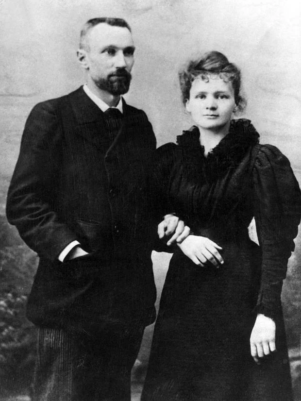
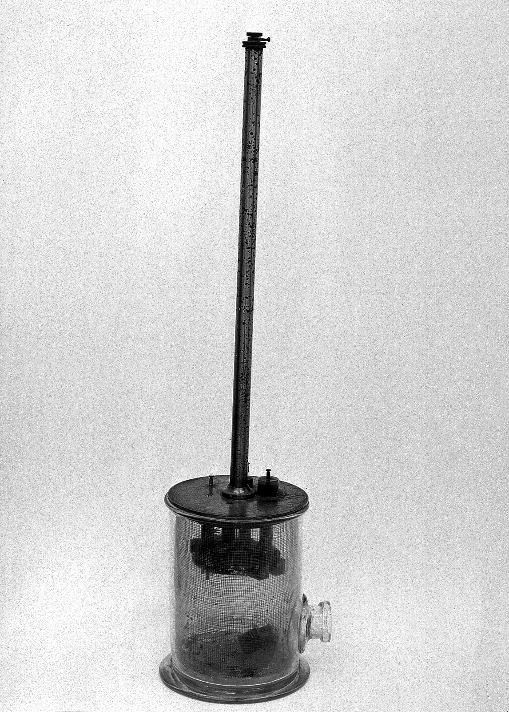
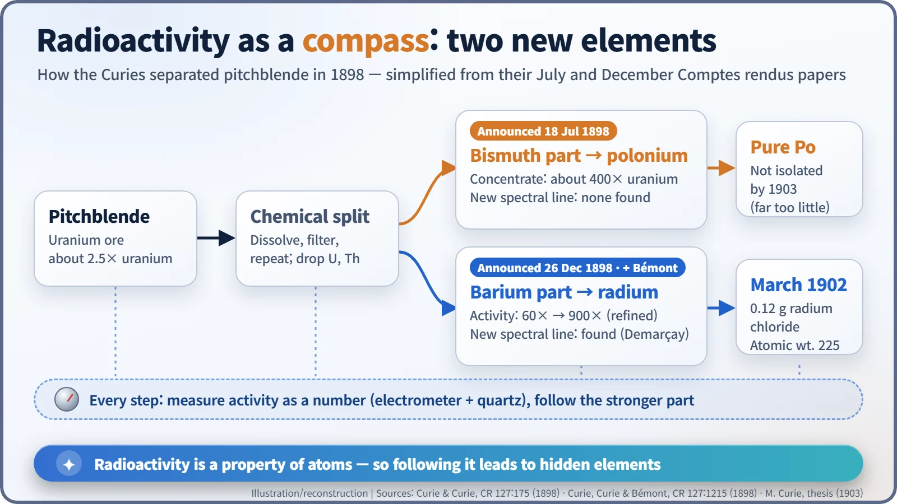
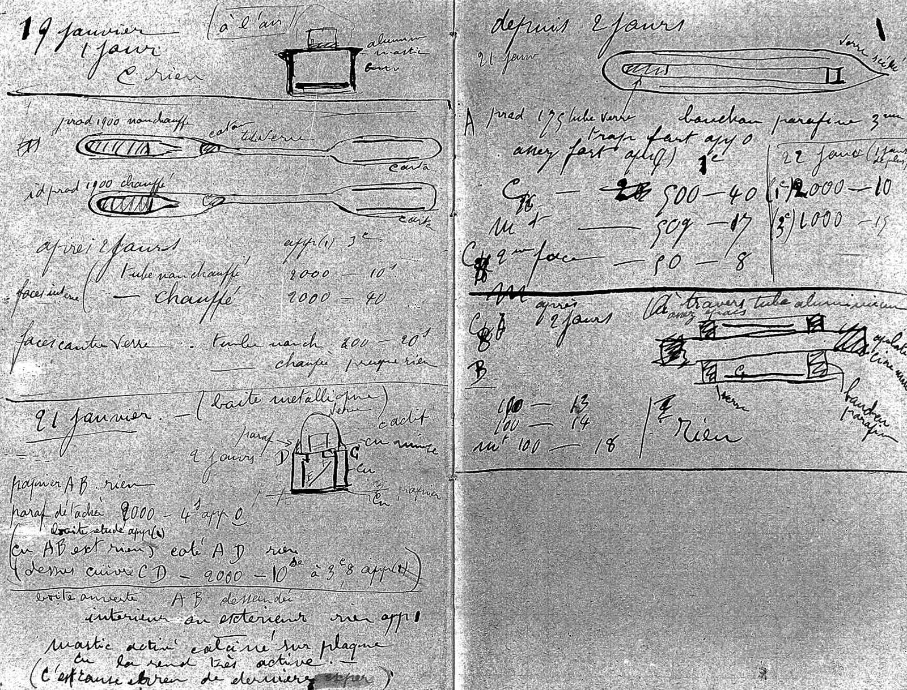
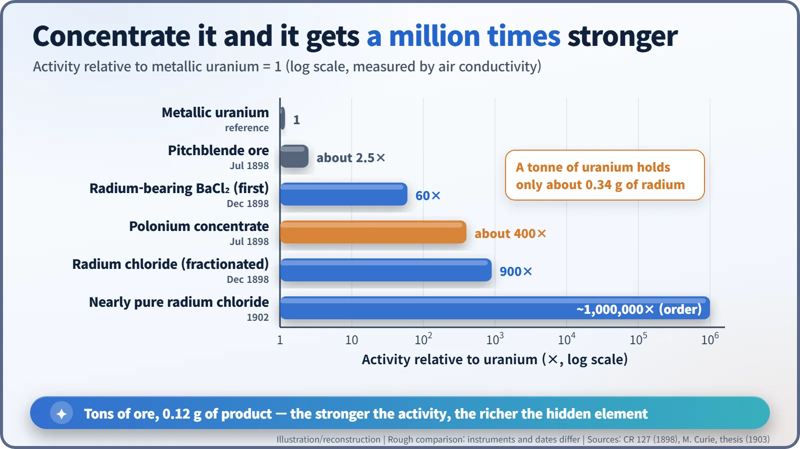
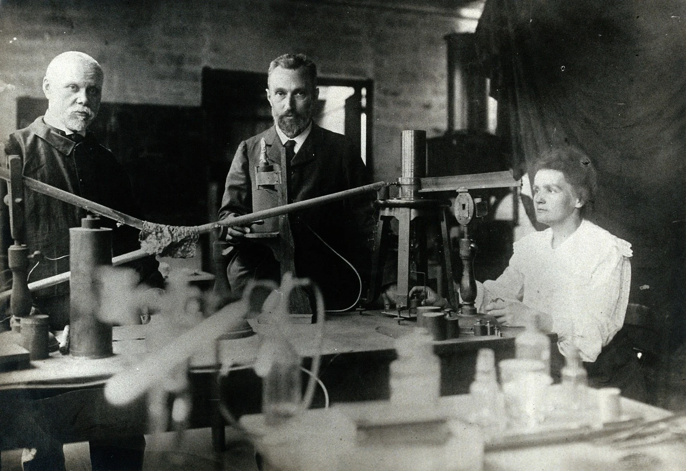

Nuclear History · 008
Naming an Element After a Country Missing From the Map — Marie and Pierre Curie Discover Polonium and Radium (1898)
By measuring radioactivity at every chemical step, the Curies tracked two unknown elements hidden in uranium ore and named the first after a Poland that was not yet on the map.
In 1898 Marie and Pierre Curie announced two new elements, polonium in July and radium in December, by using radioactivity itself as a tracking signal. They named the first after Poland, a country that did not exist on the map at the time. Proving radium was real took several tons of mine residue and four years, and ended with 0.12 grams of radium chloride. [1]
A name for a country missing from the map
"If the existence of this new metal is confirmed, we propose to call it polonium, after the name of the country of origin of one of us." That sentence (our translation from the French) comes from a short paper that Henri Becquerel presented on the authors' behalf at the Paris Academy of Sciences on 18 July 1898. [1]
The "one of us" was Marie Curie (Marie Skłodowska-Curie, 1867–1934), born in Warsaw. [5] There was a catch: in 1898 Poland was not on the map. After the partition of 1795 it had been carved up among its three neighbours, and it would not regain independence until 1918. The Curies wrote the name of a country that officially did not exist into the list of chemical elements.

Everyone was looking at X-rays; she picked the unfashionable rays
In 1896 Becquerel had reported invisible rays coming from uranium, but the world's attention was fixed on X-rays, which could photograph bones. When Marie went looking for a doctoral topic at the end of 1897, she chose the quiet "uranium rays" instead. [4]
Her weapon was an instrument built around the piezoelectric effect that her husband, Pierre Curie (1859–1906), and his brother Jacques had discovered in the 1880s. Radiation makes air very slightly conductive. Marie placed a sample on one plate of a capacitor and measured the tiny current that flowed through the air (around 10⁻¹¹ ampere, a hundred-billionth of an amp) with an electrometer and a piezoelectric quartz crystal. As the Curies put it in July, the method gave "not merely an indication, but a number" (our translation). [3]

An ore that didn't add up
Marie measured everything she could lay her hands on. She found that thorium gave off the same rays, but the German physicist Gerhard Carl Schmidt published that result slightly earlier. She acknowledged it plainly in her thesis: "M. Schmidt was the first to publish that thorium and its compounds possess exactly the same property." [3]
The real clue lay elsewhere. The strength of the rays depended only on how much uranium (or thorium) a compound contained; chemical form and impurities hardly mattered. Radioactivity, in other words, was a property of the atom itself, not of the molecule. Yet pitchblende, a uranium ore, was several times more active than pure uranium metal. In her thesis tables, metallic uranium read 2.3 (in units of 10⁻¹¹ A), while pitchblendes from Joachimsthal and Johanngeorgenstadt read 7.0 and 8.3.
When the numbers don't add up, something is hiding. Marie made an artificial version of the mineral chalcolite from pure ingredients, and it behaved "normally": about 2.5 times weaker than uranium. Natural chalcolite was twice as active as uranium. Her conclusion: the natural ore must contain a tiny amount of an unknown substance far more active than uranium. Pierre joined the hunt. She reported her first results to the Academy on 12 April 1898, and the word "radio-active" made its debut in the title of the couple's July paper.
Radioactivity becomes a compass
The method was elegant. Dissolve the ore, split it into chemical fractions, measure the activity of each, and follow whichever fraction got stronger. It was a laboratory version of the children's game "hotter, colder."
Starting from pitchblende about 2.5 times as active as uranium, the July paper followed the activity through acid and hydrogen sulphide treatment until "finally the active substance remains with the bismuth" (our translation). By partial sublimation the Curies obtained a product about 400 times as active as uranium. But the spectroscopist Eugène Demarçay found no new spectral line, and the couple honestly wrote that this fact "is not favourable to the idea of the existence of a new metal" (our translation). Hence the cautious "if confirmed." [1]
On 26 December 1898 came a second announcement, this time with Gustave Bémont, head of chemistry practicals at the Paris municipal School of Industrial Physics and Chemistry (ESPCI), as co-author. Now the activity travelled with barium. The first chloride was 60 times as active as uranium metal; repeated fractional precipitation pushed it to 900 times before they ran out of material. Demarçay found a spectral line belonging to no known element, barely visible at 60 times and distinct at 900 times: the line grew stronger as the radioactivity did. The name came from the Latin radius, a ray. Radium. [2]

Tons of residue, 0.12 grams of product
Chemists would not believe in an element until they could hold it and weigh it. The trouble was quantity. By modern calculation, a tonne of uranium in ore is accompanied by only about 0.34 g of radium and roughly 0.075 mg (75 micrograms) of polonium.
The answer was waste. At the Joachimsthal mines in Bohemia (today Jáchymov in the Czech Republic), the residue left after uranium extraction was still 4.5 times as active as uranium metal. The Austrian government, which owned the mine, donated a ton and allowed several tons more. Rough processing was done at a factory, with André Debierne working out the industrial steps; the fine purification took place in an old dissecting shed in the ESPCI courtyard, poorly ventilated and leaking when it rained. [4]
In March 1902 Marie obtained 0.12 g of radium chloride and measured radium's atomic weight at 225, close to today's 226.03. Nearly pure radium chloride was on the order of a million times as active as uranium. Polonium, with a half-life of only about 138 days, was simply too scarce; as late as 1903 she had not isolated it in pure form. [3]


| Sample | When | Activity (uranium metal = 1) |
|---|---|---|
| Pitchblende ore | July 1898 | about 2.5 |
| Polonium concentrate (bismuth fraction) | July 1898 | about 400 |
| First radium-bearing chloride | December 1898 | 60 |
| Fractionated radium chloride | December 1898 | 900 |
| Nearly pure radium chloride | 1902 | about 10⁶ (order of magnitude) |
Opening the door to new elements
The biggest legacy was the method. Using radioactivity as a signal to track invisible amounts of an element gave birth to radiochemistry. As the July paper predicted, a new element, if confirmed, would be "due solely to the new method of investigation that Becquerel's rays provide us" (our translation). In 1899 their colleague Debierne found a third radioactive element, actinium, in the same ore, and the later measurement that radium gives off heat all by itself pointed to a bigger question: energy stored inside the atom. The 1903 Nobel Prize is a story for another day.
Two common myths deserve correcting. The discovery is often remembered as Marie's alone, but Pierre's name is on both papers and Bémont's on the second. And what she obtained in 1902 was radium chloride, not radium metal.
